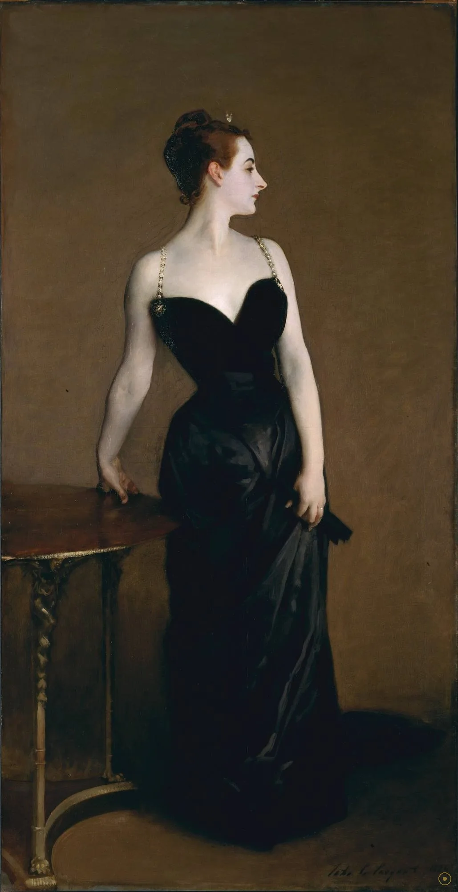
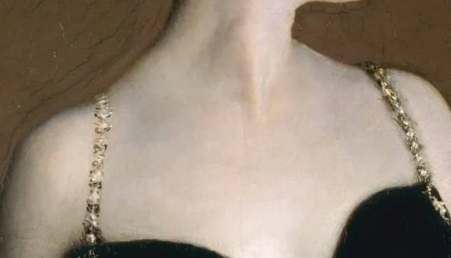
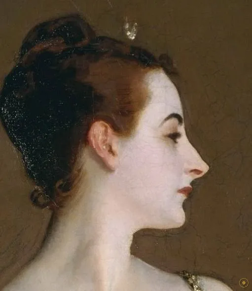
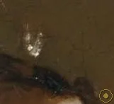
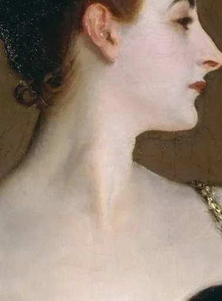
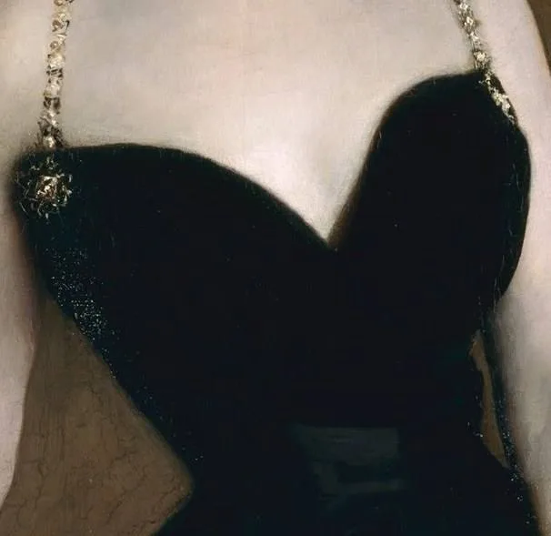
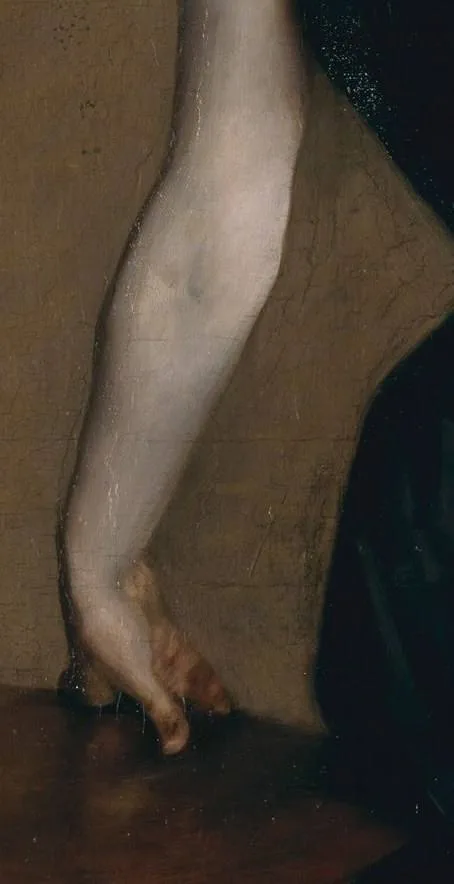
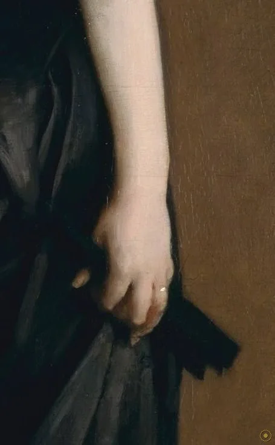
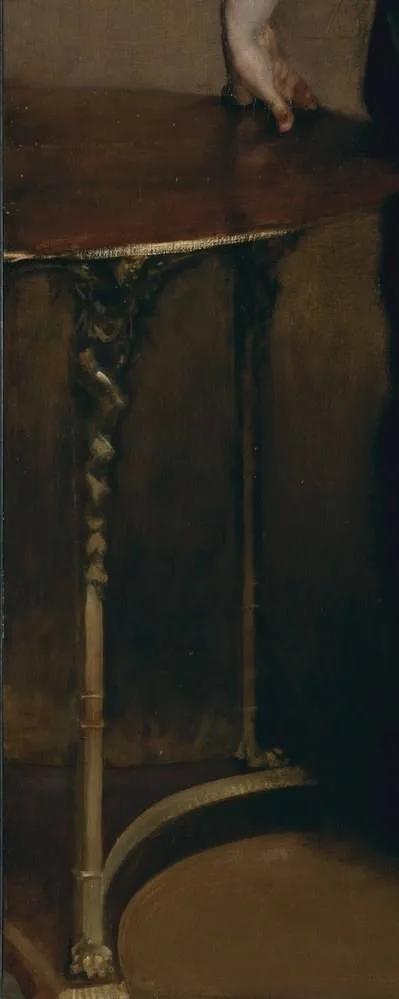

「我猜想，这是我所画过的最好的一幅画。」
她叫维尔日妮·阿梅莉·阿韦尼奥·戈特罗（Virginie Amélie Avegno Gautreau）——巴黎社交界无人不晓，画家却拒绝在画名里说出她。1884 年沙龙的展签上，这幅画只叫《X夫人肖像》：X 是数学里的未知数，也是社交场上一块挡箭牌。萨金特想画的不是某位银行家的太太，而是一个「化身」——他把这位美妇人画成了美好年代的纪念碑。
这不是订件，是萨金特一次次恳求才求来的坐姿：他在一场晚宴上远远望见她的侧影，便认定这是一件「必须由他来画」的题材。戈特罗出身新奥尔良的克里奥尔家庭，以薰衣草粉扑出的惨白肤色、低胸晚装与不可接近的姿态闻名，评论界叫她「职业美人」。萨金特赌的是：把她画下来，就能在沙龙一战成名。
他赌赢了，也赌输了——画确实让全场侧目，但那是丑闻式的侧目。不过先别急着看结局，转过身来，先看画本身：这是一场关于「对立」的研究。黑与白、露与藏、正面与侧脸、紧绷与松弛——每一组对立，都绷在同一根缎带上。
—— 约翰·辛格·萨金特 · 1916 年售画予大都会艺术博物馆时语（据传记记载）
在 1884 年的巴黎，它先是一场丑闻，然后才被承认是一件杰作。
一根肩带、一具身体、一张侧脸、一张小桌——萨金特把整个美好年代的绷紧感，压进了一幅几乎全直立的画布。

点击画面中的 ✦ 光点 查看画面细节 · 图片来源：Wikimedia Commons（公有领域）
从望见她到画完她用了约两年；毁掉这一切，只需要一个开幕日。
1882–83 · 巴黎 / 布列塔尼
萨金特在社交场合望见戈特罗的侧影，据友人回忆，他当场认定「一定要画她」。这不是一桩订件：是画家求模特。1883 年夏天他画了大量习作——脸、肩、背、那身著名的低胸裙。戈特罗以爽约著称，萨金特不止一次在信里苦等与抱怨；但越难画，他越认定值得。习作中肩带的位置一直摇摆不定——后来那根带子，成了整场风暴的中心。
➤1884.5 · 沙龙
1884 年沙龙开幕，画挂上墙，评论炸开：有人嫌肤色冷得像大理石，有人嫌姿态挑衅，《费加罗报》那句「再多挣一下，这位夫人就自由了」流传最广。戈特罗和她的母亲「泪流满面」地冲进画室（友人书信原话），母亲要求撤画；萨金特拒绝，说自己是「完全照她平时的样子画的」——但随后把那根滑落的肩带画了回去。
➤1886–1916 · 伦敦 → 大都会
巴黎的委托在丑闻后明显转冷，萨金特 1886 年前后把事业重心移往伦敦——后来他成了英语世界最抢手的肖像画家。而《X夫人》始终挂在他画室最显眼处，拒绝一切出价；1905 年起开始外借参展。1916 年，他终于把它卖给纽约大都会艺术博物馆，附上那句「我猜想这是我所画过的最好的一幅画」。

真事一 · 名字既是盾牌也是枷锁。戈特罗 1859 年生于新奥尔良的克里奥尔家庭，幼年随母亲移居巴黎，后嫁给法国银行家皮埃尔·戈特罗。她以「职业美人」的身份经营自己的形象：淡紫粉底、低胸礼服、公开场合永远端着。萨金特画的是她，也是这套经营本身——这正是同侪既仰望又不齿的暧昧之处。
真事二 · 肩带改回去了，另一幅没改。沙龙风波后萨金特把右肩肩带重新画上肩头；肩带滑落的「原始方案」以未完成的状态留存，今藏伦敦泰特美术馆。几年后库尔图瓦再画她：同样是滑落的肩带、同样的侧影，这一次公众报以掌声。时代松了一寸——就一寸。
真事三 · 他一直没卖，直到祖国开口。萨金特生于佛罗伦萨、父母是美国人、终生持美国国籍。1916 年他将《X夫人》售予纽约大都会艺术博物馆，并在信里写下「I suppose it is the best thing I have done」。今天大都会把这句话当真：它是该馆美国艺术收藏的门面，被称为「美国收藏的蒙娜丽莎」。
※ 模特生平、肩带改笔与售画经过据大都会艺术博物馆、泰特美术馆及萨金特书信等公开资料；引文据英译转译，措辞或因译本而异。
把画面拆开看：每一处细节，都在往「对立」这条主轴上加力。

身体给你，脸给你一半——宣示与退隐同时发生，这是全画的心理支点。

全画唯一正对观者的首饰，把一颗头颅衬成了夜空里的偶像。

铅白、玫瑰茜红、朱砂、翠绿、骨黑——五色调出一种「不像活人」的白。
原作滑落，被评论界围攻后画回肩上；泰特还藏着一幅没改的。

心形领口的黑缎既袒露又遮蔽，把全部光让给了皮肤。

头转向一边、手臂向后伸直——你看到的每一分「僵」，都是设计。

一手撑开、一手收拢，连双手都被安排成一组对立。

桌沿呼应腰线，桌面承住手臂：道具越沉默，越重要。
黑与白、露与藏、向前与回头——艺术史家常把这幅画描述为一场关于对立的研究（a study in oppositions）。它不叙事、不抒情，只做一件事：把「美」的公共性与「人」的私密性绷在同一根线上。这种靠张力而非故事站住的肖像，在 1884 年是新的。
这场丑闻并不只是「裙子太露」：真正冒犯巴黎的是——所有看画的人都认得她。一位以姿态经营形象的社交名媛被原样搬上两米三的大画布，等于把八卦钉上了国家展墙。肖像的羞耻，一半来自画，一半来自「被画」本身。
巴黎的委托在丑闻后转冷，萨金特北上伦敦，从丑闻主角变成爱德华时代英美最抢手的肖像画家。这幅画没能毁掉他，反而成了他一生最好的广告——客户们排队想被画成「X 夫人那样」的传世肖像。
1999 年妮可·基德曼以同款裙装与姿势登上《Vogue》；2003 年传记《Strapless》把整桩公案写成畅销书；时装史研究者把它当作 1880 年代晚装的教科书案例。一幅 1884 年的肖像，至今仍在定义「优雅的代价」。
萨金特在晚宴上望见戈特罗的侧影，恳求为她画像；次年夏天在布列塔尼完成大量习作。
沙龙展出即成丑闻；戈特罗母亲要求撤画被拒，萨金特随后把滑落的肩带画回肩上。
事业重心移往伦敦；这幅画挂在他的画室里，一挂三十年，拒绝一切出价。
售予纽约大都会艺术博物馆，附言「我猜想这是我所画过的最好的一幅画」。
大都会美国艺术收藏的门面——「美国收藏的蒙娜丽莎」，美好年代最著名的侧影。